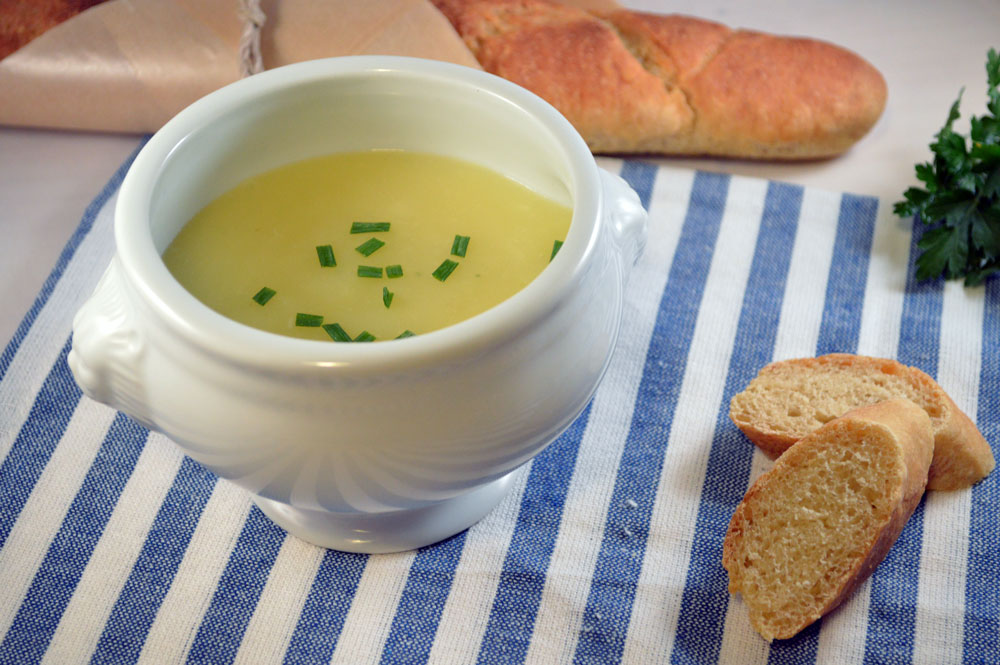

Potage Parmentier

Description
Leek or Onion and Potato Soup
Leek and potato soup smells good, tastes good, and is simplicity itself to make. It is also versatile as a soup base; add watercress and you have a
watercress soup, or stir in cream and chill it for a vichyssoise. To change the formula a bit, add carrots, string beans, cauliflower, broccoli,
or anything else you think would go with it, and vary the proportions as you wish.
For about 3 pints, serving 6 to 8 people
Ingredients
- 1 lb. peeled potatoes, sliced or diced
- 1 lb. thinly sliced leeks including the tender green; or onions
- 3 pts. of water
- 1 dsp salt
- 4 to 6 tbl cream or 1 to 1 1/2 oz. softened butter
- 2 to 3 tbl chopped parsley or chives
Steps
- Either simmer the vegetables, water, and salt together, partially covered, for 40 to 50 minutes until the vegetables are tender; or cook under 15
pounds pressure for 5 minutes, release pressure and simmer for 15 minutes.
- Mash the vegetables in the soup with a fork, or pass the soup through a moulinette. Correct seasoning. Set aside uncovered until just before serving,
then reheat to simmering point.
- Away from the heat, and just before serving, stir in the cream or butter by spoonfuls. Pour into a tureen or soup cups and decorate with the herbs.